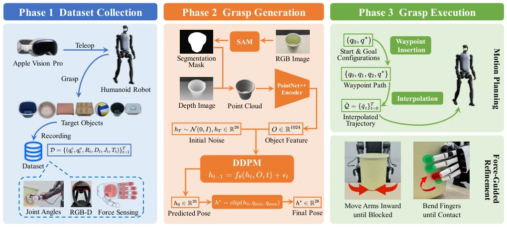
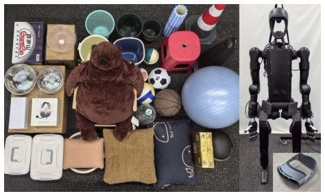
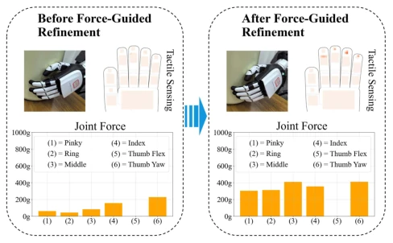

这篇论文终于把双灵巧手抓取从仿真搬到了现实，DDPM 加力反馈的组合拳确实有点东西。不过，别高兴太早，这玩意儿目前还只能在桌面上玩，遇到复杂环境估计就歇菜。虽然作者吹嘘“单视角”，但力反馈其实是在执行阶段才上的，合成阶段还是得靠点云，这算不算“单视角”的极限操作？反正比那些只会在仿真里跑通的基线强多了，至少能拎起桶和球。但仔细看，数据集量其实不大，33 个物体就想泛化到所有大物体，有点贪心。而且依赖 Vision Pro 做遥操作，成本可不低，这算不算另一种“仿真”依赖？
This paper finally transfers dual-hand dexterous grasping from simulation to reality; the combination of DDPM and force feedback is indeed effective. However, do not celebrate too early; this system currently only works on desktops and is likely to fail in complex environments. Although the authors claim "single-view", force feedback is only applied during the execution phase, while the synthesis phase still relies on point clouds. Whether this counts as the limit of "single-view" operation is debatable. Regardless, it is much stronger than baselines that only work in simulation, at least capable of lifting buckets and balls. But looking closely, the dataset size is actually not large; wanting to generalize to all large objects with 33 objects is a bit ambitious. Moreover, relying on Vision Pro for teleoperation incurs significant costs, raising the question of whether this constitutes another form of "simulation" dependency.
研究动机Motivation
大物体单手可抓不住，得双手协作。现有工作要么专注顺序任务（如倒水）[7]，要么依赖完整 3D 模型 [7]，这在单视角下根本做不到。还有像 ViSiL-HD [38] 这种，虽然真机跑，但只认立方体，换个形状就废。更惨的是，很多方法生成的抓取点根本够不着，或者执行时没法调整，导致真机一抓就滑。缺乏物理可行性验证是通病，导致仿真效果好的模型一上真机就变“纸老虎”。特别是单视角下，自遮挡严重，重建完整模型几乎不可能，这限制了现有方法的落地。
Large objects cannot be grasped by a single hand, necessitating two-hand collaboration. Existing works either focus on sequential tasks (e.g., pouring water) [7] or rely on complete 3D models [7], which is fundamentally unachievable under single-view conditions. Methods like ViSiL-HD [38], while running on real hardware, only recognize cubes and fail with other shapes. More critically, many methods generate grasp points that are unreachable or cannot be adjusted during execution, leading to slips upon real-world attempts. The lack of physical feasibility verification is a common issue, causing models that perform well in simulation to become "paper tigers" in reality. Particularly under single-view conditions, severe self-occlusion makes reconstructing a complete model nearly impossible, limiting the deployment of existing methods.
The workflow is divided into three steps: first, create a real-world dataset (Teleop + Vision Pro); second, use DDPM to generate joint configurations from segmented point clouds; finally, during execution, perform motion planning with force feedback fine-tuning. The core innovation lies in not relying on a complete mesh, but directly using point clouds and a diffusion model to predict 26-dimensional joint angles. The execution phase is sophisticated: first, plan paths to prevent collisions; then, rely on force/tactile sensors to push the arm in and bend the fingers until contact is stable. This is equivalent to adding "haptic calibration" to "blind grasping". DDPM is used to handle multimodal uncertainty, proving more stable than regression. In specific implementation, SAM is first used to segment objects, PointNet++ extracts features, and DDPM denoises to generate poses. During execution, trajectories are generated via interpolation first, then finger angles are dynamically adjusted based on force thresholds to ensure sufficient contact force. Joint angles are also clipped to prevent hardware over-limit.

Fig. 2: Pipeline of our method. The framework consists of three phases. In Phase 1, a teleoperated humanoid robot performs real-world bimanual grasps on large objects, and the multimodal data is continuously recorded, including visual observations, joint angles, and force sensing, which are then aggregated into a structured dataset. In Phase 2, a diffusion model is trained on this dataset to predict target joint configurations from segmented point clouds. These predictions are then passed to Phase 3 for execution via motion planning and force-guided refinement, enabling stable grasping in physical environments.

Fig. 3: Hardware platform and all the grasped objects.
33 large objects were used, with 353 grasps performed. Baselines include BimanGrasp-DDPM [7], ViSiL-HD [38], etc. The metric is success rate (lift 5cm and hold for 2 seconds). The results show our method achieved 61.9%, significantly outperforming BimanGrasp-DDPM's 28.5%. Ablation experiments demonstrate that removing force feedback or planning causes the success rate to drop by half. Figure 6 shows that fingertip force increases significantly after force feedback, indicating that fine-tuning is indeed effective. Failure cases are mostly due to objects being too heavy or positioned too far, indicating that physical limits remain. Particularly when objects are out of view or too heavy, force feedback cannot rescue the grasp.

Fig. 6: Comparison of dexterous hand poses, joint forces, and tactile forces before and after force-guided refinement.